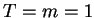
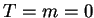
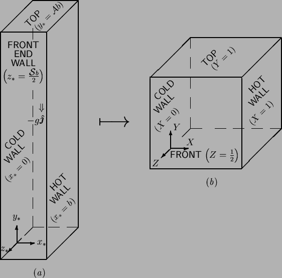

Next: Some properties of the
Up: Basic Equations of Vapour
Previous: The single fluid heat
Contents
Geometry
In order to solve the system of equations developed above,
a domain and boundary conditions must be specified.
Various limiting cases of the vertical cuboid are considered in chapters
4-7.
One opposing vertical pair of walls are taken to be the source and
sink of vapour, while the other four walls, the front, back, floor and
ceiling, serve mainly to bound the domain. Let uniform temperatures
and vapour mass fractions be specified on the hot () and cold
() walls, and take the others to be impermeable, postponing the
question of their thermal boundary conditions. The cuboid is defined
by one length scale,  , which is taken to be the distance separating
the hot and cold walls, and two aspect ratios:
, which is taken to be the distance separating
the hot and cold walls, and two aspect ratios:  , vertical; and
, vertical; and
 , spanwise. As illustrated in figure 2.1,
, spanwise. As illustrated in figure 2.1,
Figure 2.1:
Cuboid domain geometry, in (a)
primitive
and (b) normalized coordinates.
The gravitational field strength is also
shown in (a).
|  |
the cold and
hot walls lie in the planes  and 1, respectively; the
and 1, respectively; the  -axis is vertical
and the
-axis is vertical
and the  -axis is chosen so as to form a right-handed system with
-axis is chosen so as to form a right-handed system with  and
. Since solutions of (2.52)-(2.55) are symmetrical about
the central spanwise plane--the corresponding result for the analogous single
fluid heat transfer problem was stated and used by Mallinson and de Vahl Davis
(1977)--the origin of the coordinate system is located
halfway along the base of the cold wall. Note that the
centrosymmetry properties of the analogous single fluid heat transfer problem
(see §2.4)
described by Gill (1966) do not hold for the solutions of the
present system.
and
. Since solutions of (2.52)-(2.55) are symmetrical about
the central spanwise plane--the corresponding result for the analogous single
fluid heat transfer problem was stated and used by Mallinson and de Vahl Davis
(1977)--the origin of the coordinate system is located
halfway along the base of the cold wall. Note that the
centrosymmetry properties of the analogous single fluid heat transfer problem
(see §2.4)
described by Gill (1966) do not hold for the solutions of the
present system.
In addition to the simply nondimensionalized coordinates:
the a normalized set
is also useful.
The transformation from primitive to normalized coordinates, in which the
cuboid becomes a unit cube, is illustrated in figure 2.1.
The normalized coordinates have the advantage of having a unit range. The
apparent disadvantage that the expression for nabla in terms of them is
more cumbersome;
is in fact also an advantage,
since it moves the parameters and from the
boundary conditions to the field equations. Great use will be made of this
in examining limiting forms of the cuboid in chapters 4 and
7.
Next: Some properties of the
Up: Basic Equations of Vapour
Previous: The single fluid heat
Contents
Geordie McBain
2001-01-27